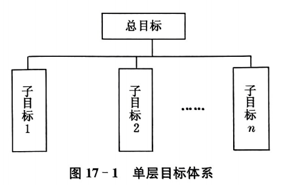
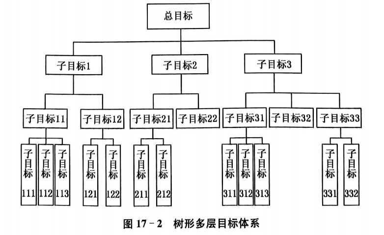
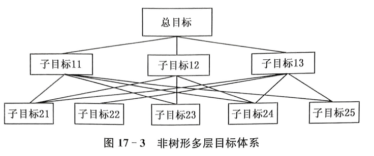
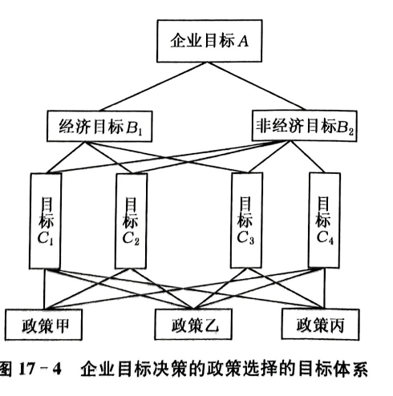
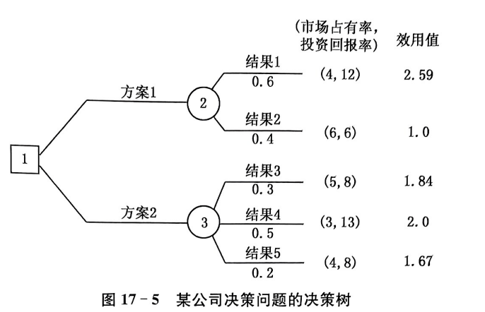
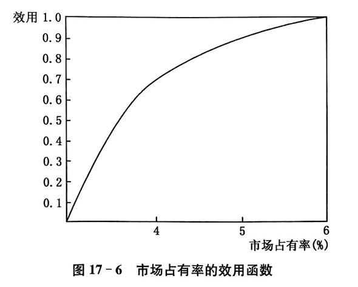
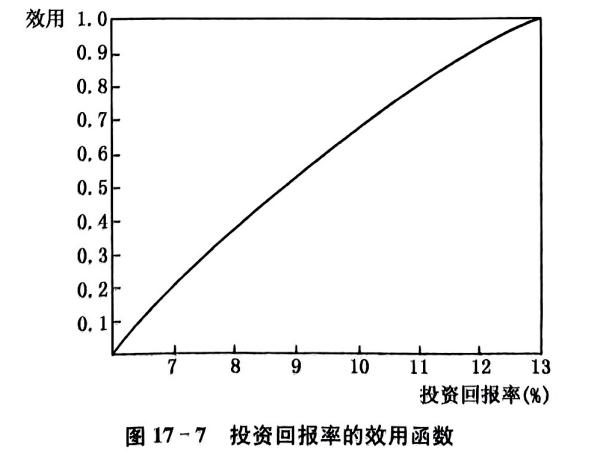

当目标不止一个，决策就不再是简单排队
F5 开启全屏放映 | 单击鼠标步进讲解
企业选厂址，不只看成本，还要看交通、环保、员工通勤、政策支持；学校制定培养方案，不只看就业率，还要看学生能力、课程负担和长期发展。单目标决策像只盯着奶茶甜度，多目标决策还要管热量、价格、排队时长和钱包残血程度。
多个目标同时出现，决策开始变得不听话
多个目标没有统一的度量单位。利润可以用万元衡量，企业形象、环境责任、员工满意度却很难直接折成同一个单位。
一个目标改善，可能会损害另一个目标。比如扩大生产可能提高利润，却增加污染；降低成本可能提高收益，却影响服务质量。
多目标决策的第一步不是急着算，而是先把目标体系画清楚。



多目标决策方法很多，本章重点介绍四类：层次分析法、多属性效用决策法、优劣系数法和模糊决策法。其他方法不是不存在，只是本章不打算把学生一口气塞进方法宇宙黑洞。
把复杂目标分层，两两比较，计算权重与排序。
把不同属性转为效用值，再加权综合。
比较方案间优势数量、重要性和劣势程度。
处理“好、不太好、舒适”等模糊评价。
把复杂问题拆成层，再把主观判断算成权重
层次分析法把复杂问题分解成总目标、准则层、方案层。每一层内部做两两比较，得到局部权重，再逐层合成总权重。它把“感觉哪个重要”变成“能计算、能检验”的权重。

层次分析法不是让专家“凭感觉拍脑袋”，而是把判断拆成一组组 两两比较，再写成判断矩阵，经过归一化、权重计算和一致性检验， 最后得到方案总排序。
先把复杂问题拆成总目标、准则层和方案层。比如选校区建设方案： 总目标是“选择最佳校区”，准则可以是成本、质量、风险、交通等。
对同一层的因素逐对比较，回答“谁更重要，重要多少”。 比如成本比质量稍微重要，可写成 3；反过来就是 \(1/3\)。
将判断矩阵按列归一化，再按行求和并归一化，得到权重向量。 这些权重就是各因素对上层目标的重要程度。
用 \(CI\) 和 \(CR\) 做一致性检验。若 \(CR<0.1\)，说明判断基本一致； 若不通过，就要回去改判断矩阵。
不要一上来就问“选哪个方案”，先把问题拆开： 最上面是总目标，中间是评价准则，最下面是备选方案。 AHP 的第一步就是把一团乱麻整理成层次结构。
分层让我们把复杂问题拆成小块，逐层分析。总目标是我们想要达到的结果，准则是评价方案的标准，方案是我们在选项中比较的对象。 只有分清了层次，我们才能有针对性地进行两两比较和权重计算。
多目标之间没有统一单位，成本是万元，质量是分数，风险是等级。 直接比较会乱套。AHP 的办法很朴素：一次只比较两个因素， 问“谁更重要，重要多少”。
判断矩阵是 AHP 的核心。元素 \(a_{ij}\) 表示第 \(i\) 个目标相对第 \(j\) 个目标的重要程度。它必须满足 \(a_{ii}=1\)，且 \(a_{ij}=1/a_{ji}\)。也就是说，你不能一边说 A 比 B 重要 3 倍，又说 B 比 A 重要 5 倍，除非你想让矩阵报警。
| \(a_{ij}\) | 两目标相比 |
|---|---|
| 1 | 同样重要 |
| 3 | 稍微重要 |
| 5 | 明显重要 |
| 7 | 重要得多 |
| 9 | 极端重要 |
| 2,4,6,8 | 介于相邻判断之间 |
| 倒数 | 反过来比较 |
课堂提醒：判断矩阵不是“随便填分数”，而是把专家判断翻译成可计算的相对重要性。
某层有三个子目标：子目标1比子目标2稍微重要，取 3；子目标1比子目标3明显重要，取 5；子目标2与子目标3介于同样重要和稍微重要之间，取 2。
判断矩阵填好后，接下来做三件事： 列归一化 → 行求和并归一化 → 一致性检验。 这样就把主观判断转成了权重。终于从“我觉得”变成“我算得”，人类文明短暂进步了一小步。
每个元素除以所在列的合计。
每一行求和，再除以总和。
判断是否基本自洽。
对判断矩阵计算后得到权重：
说明子目标 1 最重要，其次是子目标 2，最后是子目标 3。
一致性检验： 若 \(CR<0.1\)，判断矩阵可以接受；若不通过，就说明前面的比较存在明显矛盾，需要重新调整。
和积法的第一步：每一列分别求和，再用该列每个元素除以列和。列归一化之后，每一列的合计都等于 1。
例如：\(\bar a_{11}=1/(23/15)=0.6522\)，\(\bar a_{21}=(1/3)/(23/15)=0.2174\)。别把列归一化做成行归一化。
解释：权重最大的目标 1，约占 64.8%；目标 2 约占 23.0%；目标 3 约占 12.2%。
AHP 允许人的判断有一点不一致，但不能乱到离谱。所以要计算最大特征根、CI 和 CR。一般 \(CR \lt 0.1\) 时，认为判断矩阵具有满意一致性。
| 阶数 | 3 | 4 | 5 | 6 | 7 | 8 | 9 |
|---|---|---|---|---|---|---|---|
| RI | 0.58 | 0.90 | 1.12 | 1.24 | 1.32 | 1.41 | 1.45 |
结论：本例 \(CR=0.0032\lt0.1\)，判断矩阵通过一致性检验，权重结果可用于后续决策。
设企业目标分为经济目标和非经济目标，下设 \(C_1,C_2,C_3,C_4\) 四个具体目标，并有甲、乙、丙三项政策方案。通过各层判断矩阵与一致性检验，得到局部权重矩阵。
0.2579
0.4376
0.3026
结论：政策乙权重最大，应选择政策乙。目标重要性权重为 \((0.2805,0.5240,0.1549,0.0383)\)，其中目标2最重要。
先把不同属性转成效用，再做综合判断
多属性效用决策把目标值转化为效用值，再进行加权综合。这样一来，市场占有率、投资回报率、成本、质量这些单位不同的东西，就能在“效用”这条统一轨道上比较。
若两个属性 \(X,Y\) 效用相互独立，则可写成：
若两属性存在交互影响，可加入交互项：

注意：效用函数的形式和参数需要根据实际情况确定，不能随便套公式。


| 方案 | 市场占有率 X(%) | 投资回报率 Y(%) | 概率 | 属性效用 | 综合效用 |
|---|---|---|---|---|---|
| 1 | 4 | 12 | 0.6 | U1=0.75, U2=0.92 | 2.59 |
| 1 | 6 | 6 | 0.4 | U1=1, U2=0 | 1.00 |
| 2 | 5 | 8 | 0.3 | U1=0.92, U2=0.46 | 1.84 |
| 2 | 3 | 13 | 0.5 | U1=0, U2=1 | 2.00 |
| 2 | 4 | 8 | 0.2 | U1=0.75, U2=0.46 | 1.67 |
投资回报率比市场占有率重要，设 \(k_2=2k_1\)，取 \(k_1=1,k_2=2\)，则 \(U(X,Y)=U_1(X)+2U_2(Y)\)。
结论：方案 1 的期望效用 1.954 大于方案 2 的 1.886，因此选择方案 1。
某企业准备购买一辆新车，三种品牌的设计和价格差不多，都符合基本要求。 这时决策关键就变成：哪辆车在多个属性上的综合表现最好？
记住： 多属性效用决策的第一步，是把“我想买哪辆车”拆成一组可评价的属性。
权重来自一组两两比较判断。比如“节能的重要性是功率的 2 倍”， 就可以写成 \(k_3=2k_7\)。
这里按属性编号理解：\(k_1\) 舒适，\(k_2\) 性能，\(k_3\) 节能，\(k_4\) 造型， \(k_5\) 特点，\(k_6\) 引擎质量，\(k_7\) 功率。
权重关系说明“谁是几倍”，没有确定具体数值。 所以可以先指定一个属性为基准，例如令引擎质量权重为 \(k_6=1\)， 再根据前面比例关系推出其他权重。
即把“引擎质量”的重要性作为 1 个单位。
| 属性 | 含义 | 初步权重示意 |
|---|---|---|
| \(k_1\) | 舒适 | 1.5 |
| \(k_2\) | 性能 | 1.125 |
| \(k_3\) | 节能 | 1.5 |
| \(k_4\) | 造型 | 0.75 |
| \(k_5\) | 特点 | 1.0 |
| \(k_6\) | 引擎质量 | 1.0 |
| \(k_7\) | 功率 | 0.75 |
经过进一步两两比较，并为了保持比较的一致性，最终确定七个属性的权重如下。 这些权重将直接用于后面的三辆车综合效用计算。
| 属性 | 舒适 \(X_1\) | 性能 \(X_2\) | 节能 \(X_3\) | 造型 \(X_4\) | 特点 \(X_5\) | 引擎质量 \(X_6\) | 功率 \(X_7\) |
|---|---|---|---|---|---|---|---|
| 权重 | 1.8 | 1.5 | 2.2 | 1.0 | 1.33 | 1.0 | 1.4 |
对每一辆车，把它在七个属性上的评分代入这个公式。 得分越高，说明该车在决策者偏好下的综合效用越高。
前面已经确定七个属性的最终权重。现在把每辆车在七个属性上的评分代入加权效用函数， 分别计算综合效用值。效用值最高的汽车，就是本例的最优选择。
最终结论： 三辆车的综合效用分别约为 \(63.81,67.68,73.47\)， 第三种牌号汽车 \(Y_3\) 的综合效用最高，因此应选择 \(Y_3\)。
不只看谁赢，还看赢了多少、输了多少
优劣系数法用于多个方案、多项指标的比较。先确定目标权数，再把不同单位的指标标准化，之后计算方案之间的优系数和劣系数，最后逐步淘汰不理想方案。
表示一个方案优于另一个方案的目标权数之和占全部权数的比例。它看的是“赢在哪些目标上，以及这些目标有多重要”。
比较优势目标的最大差距与劣势目标的最大差距，反映“输了的程度有多严重”。
| 目标 | 单位 | 方案1 | 方案2 | 方案3 | 方向 |
|---|---|---|---|---|---|
| 建厂投资 | 万元 | 1000 | 860 | 750 | 越小越好 |
| 建成年限 | 年 | 5 | 4 | 3 | 越小越好 |
| 流动资金 | 万元 | 458 | 333 | 385 | 越小越好 |
| 年产值 | 万元 | 2600 | 1960 | 2200 | 越大越好 |
| 产值利税率 | % | 12 | 15 | 12.5 | 越大越好 |
| 环境污染 | 评分 | 3 | 6 | 5 | 越大越好 |
| 目标 | 方案1 | 方案2 | 方案3 |
|---|---|---|---|
| 建厂投资 | 1 | 56.44 | 100 |
| 建成年限 | 1 | 50.5 | 100 |
| 流动资金 | 1 | 100 | 58.816 |
| 年产值 | 100 | 1 | 38.125 |
| 产值利税率 | 1 | 100 | 17.5 |
| 环境污染 | 1 | 100 | 67 |
目标权数分别为：
原表总分为 75，因此也可直接用行合计数 19,16,10,5,14,11 来计算优系数。
方案1 只在“年产值”上优于方案2，该目标原始优序图合计为 5。
| 方案1 | 方案2 | 方案3 | |
|---|---|---|---|
| 方案1 | 0.0667 | 0.0667 | |
| 方案2 | 0.9333 | 0.4667 | |
| 方案3 | 0.9333 | 0.5333 |
| 方案1 | 方案2 | 方案3 | |
|---|---|---|---|
| 方案1 | 0.5 | 0.6154 | |
| 方案2 | 0.5 | 0.375 | |
| 方案3 | 0.3846 | 0.625 |
决策：先取较高优系数标准淘汰方案1；再比较方案2 与方案3，方案2 的劣系数较低，因此最终选择方案2。
当“好”“舒适”“美观”不能用硬边界切开
现实中很多概念边界并不清楚，例如“高个子”“舒适”“美观”“价格合理”。模糊集合用隶属度 \(\mu_A(x)\in[0,1]\) 表示某元素属于某概念的程度。
注意：这里的“+”只是查德符号，表示元素并列，不是真的把人加起来。
产品功能集合为 \(X=\{舒适性,耐磨性,美观性\}\)，评级域为 \(V=\{很好,好,不太好,不好\}\)。顾客评价得到两个方案的评价矩阵。
解释：舒适性、耐磨性、美观性的权重分别为 0.3、0.3、0.4，说明美观性在本决策中略更重要。
用最大最小合成规则计算 \(B=W\times R\)：先对每个评价等级取 \(\min(W_i,r_{ij})\)，再对这些最小值取最大值。
方案 B 合计为 1.2，需归一化。
| 自然状态 | 很好 V1 | 好 V2 | 不太好 V3 | 不好 V4 | |
|---|---|---|---|---|---|
| 状态概率 | 方案A | 0.4 | 0.3 | 0.2 | 0.1 |
| 方案B | 0.17 | 0.25 | 0.33 | 0.25 | |
| 损益值 | 方案A | 1000 | 800 | 300 | -300 |
| 方案B | 800 | 700 | 200 | -200 | |
结论：方案 A 的期望损益值 670 万元大于方案 B 的 327 万元，应生产产品型号甲。
多目标决策是多个目标同时参与的决策问题，核心困难是目标之间不可公度、目标之间存在矛盾。
在满足决策需要的前提下减少目标个数；分析目标重要性并赋予权重，把注意力集中到重要目标上。
一句话收束：多目标决策不是让所有目标都满意，那是童话；它是用权重、效用、标准化和模糊评价，把冲突目标变成可解释、可计算、可选择的方案排序。